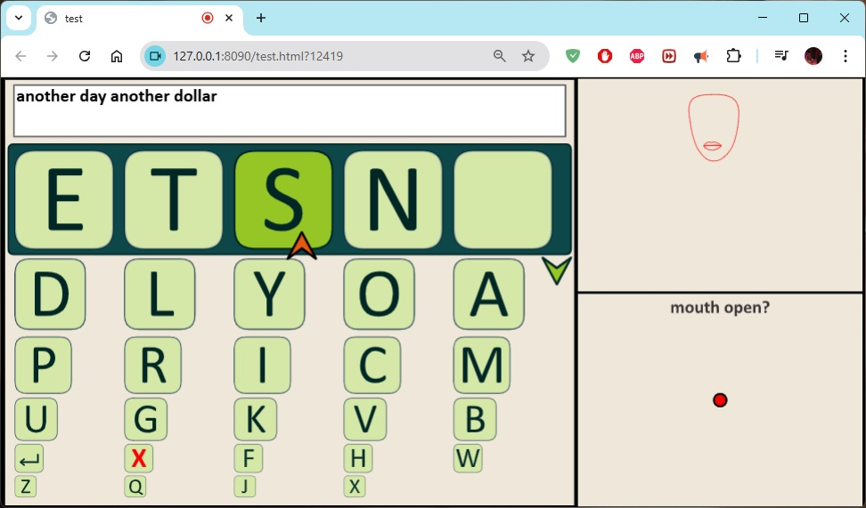
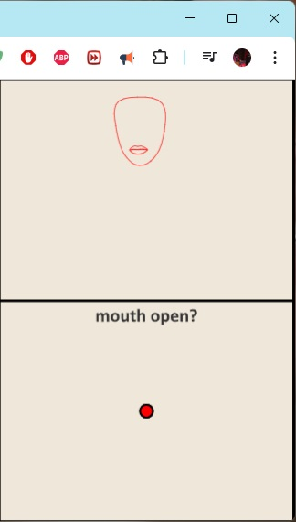
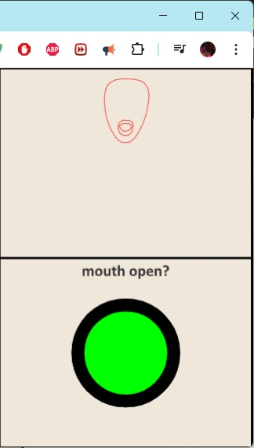
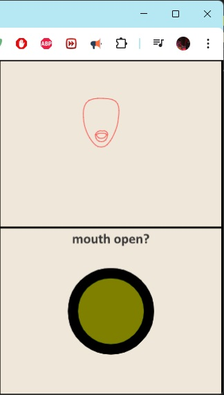

This typing interface allows you to write simply by opening your mouth.

The image above shows what the interface looks like. The main panel contains buttons for the letters of the alphabet. A small red arrow points at each of the top five letters in turn - open your mouth to select the letter that is being pointed at.
The small red arrow will also point at the down button in the right of the main panel - this button will select the next five letters.
Simply open and then close again.
When your mouth is detected as closed the dot in the lower right panel will be red. When your mouth is detected as open the dot will be green.

When your mouth has been open long enough to 'click' a button, the dot will turn brown. You have to close your mouth again before you can 'click' anything else.
The button with the red 'X' will delete one letter at a time.
The button with the Enter symbol will delete everything.
Yes! The red pointer is not actually the mouse, so anyone who is with you can speed things up by finishing off words, deleting clear mistakes, etc.
You don't have to spell things perfectly. Even with multiple spelling mistakes text is still readable.
Make sure your camera is enabled.
Click allow when the browser asks for permission to access your camera.
This website has been tested on the Chrome browser.
Go to interface.